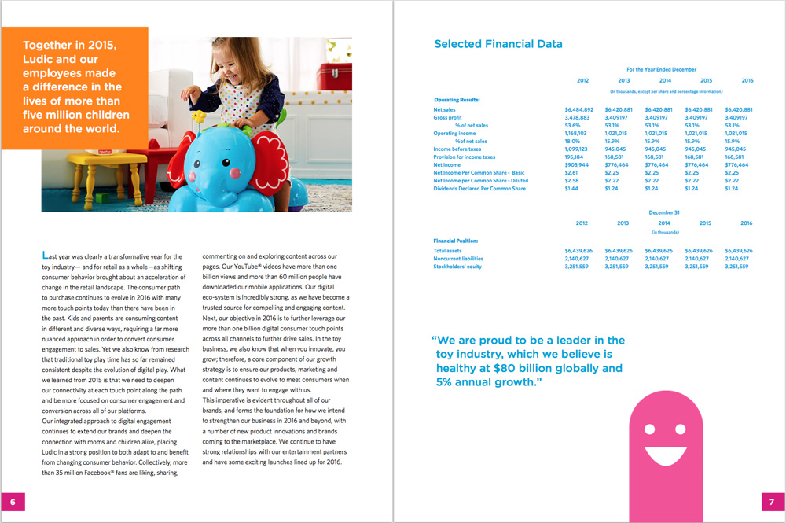

LUDIC ANNUAL REPORT
Print
A project involving an annual report for a fictitious company. For this I created a toy company named “Ludic,” which is latin for “play.” By focusing on a toy company, it allowed me to give the piece a more joyful tone. The rounded typefaces reflect the playful nature of the finger puppet-esque design elements I created for the project. Even with these elements. I tried to maintain a clean layout to both help with readability and reinforce that this is, after all, an earnings and financial report.
